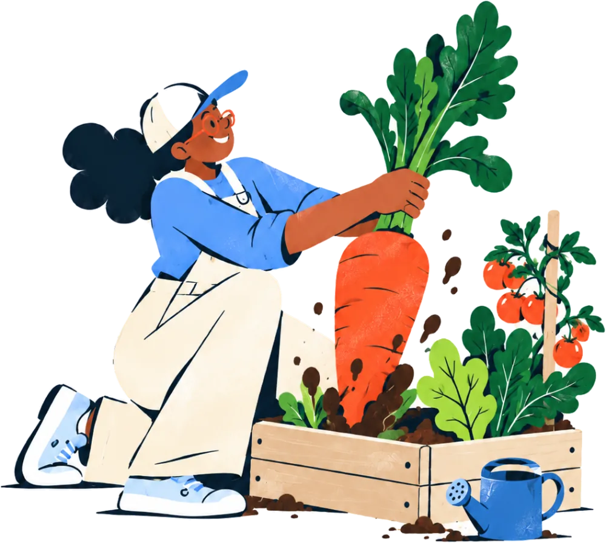
Le potager collectif
Toute l'année, les bénévoles l'entretiennent à la main, et les légumes récoltés partent directement à l'épicerie.
Une épicerie sociale et une équipe de bénévoles qui vous aident pour les courses, le logement, l'emploi, la santé, les papiers et le budget. L'accompagnement est gratuit, confidentiel et sans jugement.
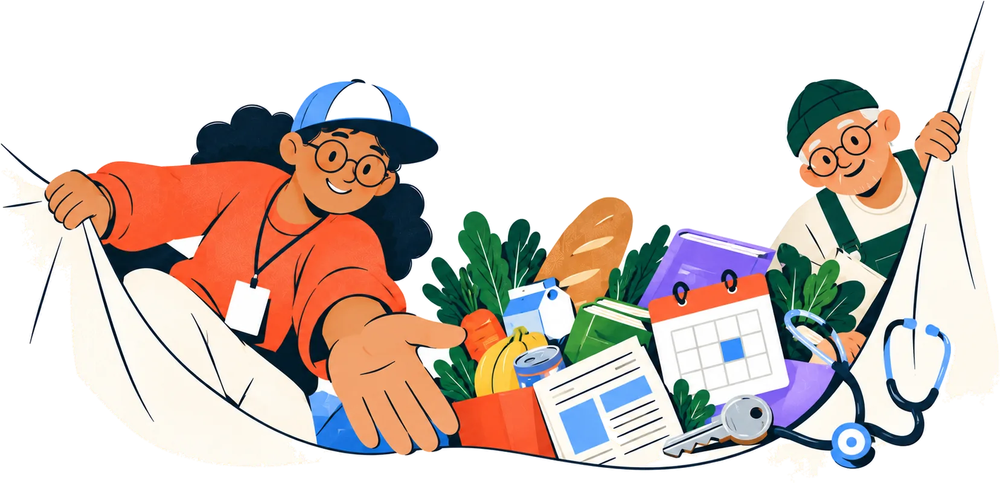
C'est une épicerie pour les personnes qui traversent une période difficile. Vous y choisissez vous-même vos produits, frais ou de base, et vous payez une contribution solidaire, à prix réduit. Comme dans un magasin.
Chez nous, l'épicerie est surtout une porte d'entrée. Vous venez pour les courses, vous prenez un café, et souvent la conversation glisse vers le reste : une facture, un courrier, un souci de logement ou de santé. Les bénévoles prennent le temps d'écouter, puis vous aident à avancer, une chose après l'autre.
C'est pour toute personne qui traverse une période difficile : seule ou en famille, avec ou sans emploi, à la retraite ou aux études. Si vous hésitez, appelez-nous. Nous regardons ensemble ce qui est possible.
Tout commence par un rendez-vous, gratuit et confidentiel.
Nous regardons avec vous par où commencer. Nous vous accompagnons dans la mesure de nos possibilités et, lorsque ce n'est pas dans nos compétences, nous vous orientons vers les services ou les professionnels appropriés.
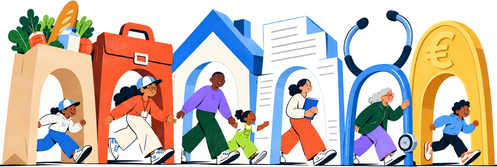
Accès conditionné à l'épicerie sociale, produits frais et de saison, produits d'hygiène et aide alimentaire adaptée aux possibilités de notre structure.
Un coup de pouce pour avancer : aide à la réalisation du CV avec notre équipe informatique, lettres de motivation, démarches administratives en ligne, préparation aux entretiens et orientation vers les organismes ou employeurs appropriés.
Nous ne sommes ni une agence immobilière ni un service logement. Nous pouvons cependant aider dans certaines démarches, orienter vers les services compétents et faciliter des mises en relation.
Grâce à la confiance que nous accordent certains propriétaires, il nous arrive également de pouvoir accompagner une famille vers un logement. Ces possibilités restent toutefois ponctuelles et dépendent des logements qui nous sont proposés.
Nous pouvons aider à comprendre un courrier, préparer certaines démarches ou orienter vers les bons interlocuteurs. Pour les questions juridiques, nous travaillons avec les professionnels compétents et pouvons, lorsque la situation le nécessite, accompagner la personne dans ses démarches.
Nous ne nous substituons évidemment pas aux médecins ni aux professionnels de santé. Notre rôle est surtout d'écouter, d'orienter et, si nécessaire, d'aider la personne à faire le lien avec un médecin, un hôpital, une mutuelle, un psychologue ou un service adapté.
Nous ne sommes pas un service de médiation de dettes. Nous pouvons néanmoins aider à mieux comprendre une situation, un courrier ou une facture, rechercher avec la personne les aides auxquelles elle pourrait avoir droit et l'orienter vers les services spécialisés lorsque cela est nécessaire.
Notre rôle est modeste mais essentiel : écouter, accompagner, orienter et créer des liens. Nous ne faisons pas tout, mais nous essayons de ne pas laisser une personne seule face à ses difficultés.
Venez comme vous êtes. Il y a quatre étapes, à votre rythme, et rien n'est décidé sans vous.
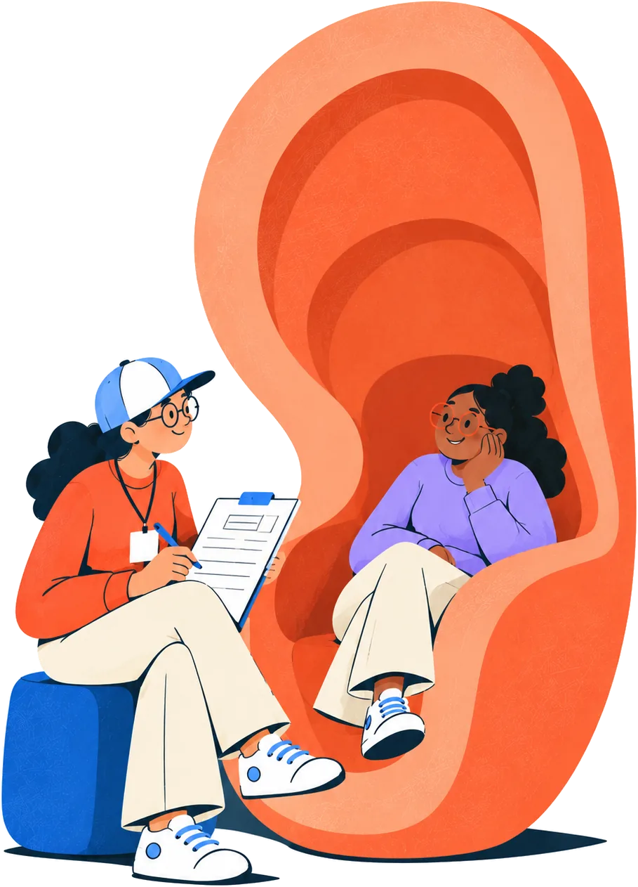
Nous prenons un café et nous discutons. Vous racontez ce qui vous amène, sans formulaire à remplir.
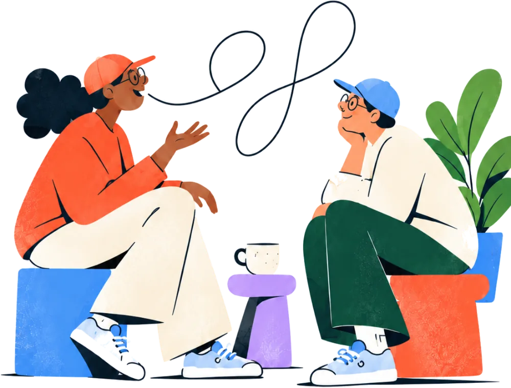
Nous regardons votre situation dans son ensemble, parce que tout est souvent lié : les courses, le logement, le travail, la santé, les papiers et le budget.
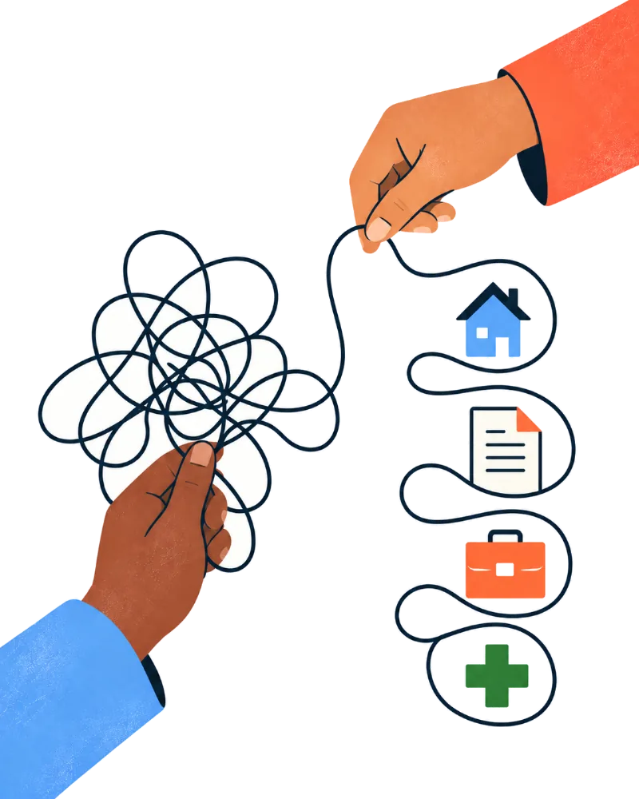
Des étapes concrètes et réalistes, dans l'ordre qui vous convient. C'est vous qui décidez.
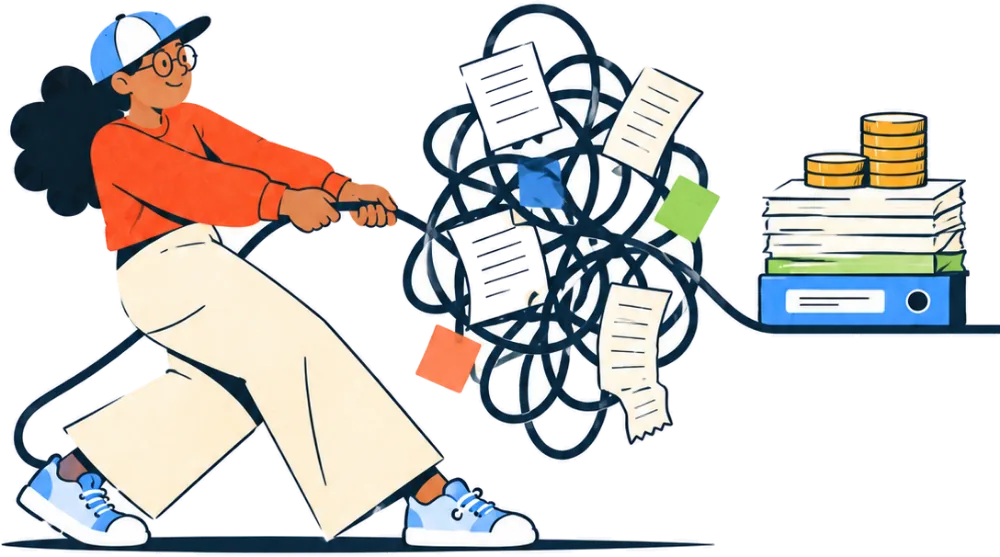
Un bénévole devient votre référent. Il fait le point avec vous régulièrement, et vous pouvez l'appeler dès que quelque chose coince.
Pour une première visite, rien à préparer ni à apporter. Vous venez, et nous discutons.
Choisissez un créneau en ligne, ou appelez-nous au 0465 92 73 66 du lundi au vendredi. Le rendez-vous est gratuit et confidentiel.
L'épicerie se trouve rue de la Station 139A, à Waterloo.
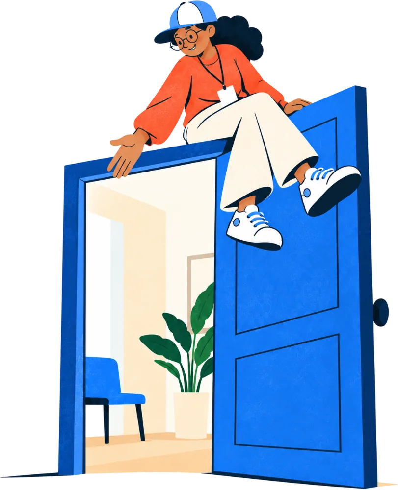
Le premier jeudi de chaque mois, l'épicerie est réservée aux étudiant·es. Pour 5€, tu repars avec tes courses.
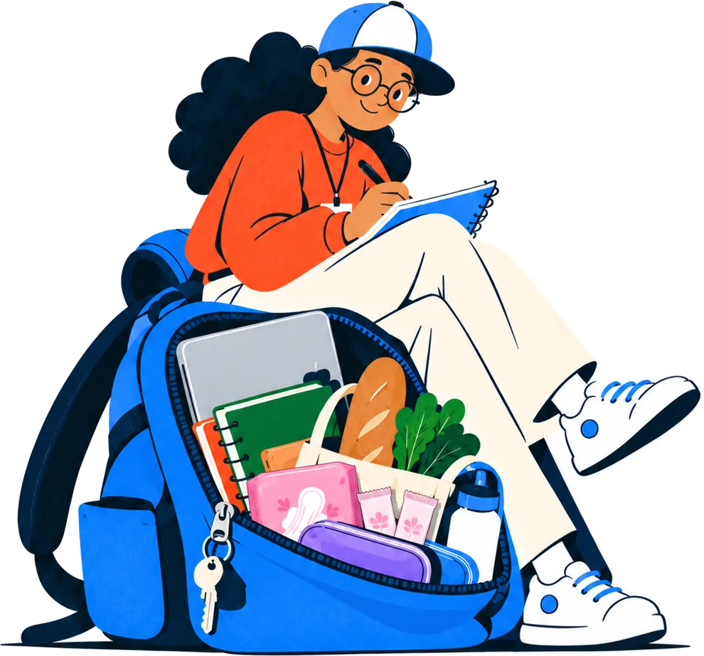
La prochaine a lieu le premier jeudi du mois.
Si tu ne peux pas venir, préviens-nous. Une absence non excusée empêche de se réinscrire par la suite.
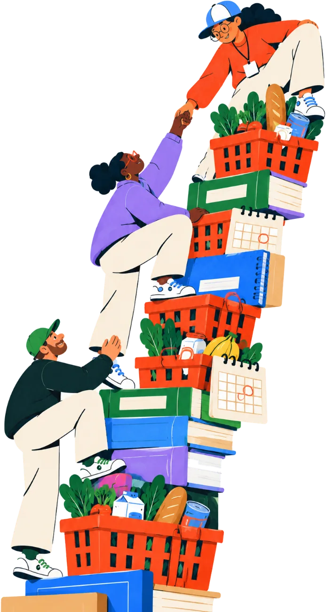
Une heure par semaine, une compétence, une voiture, une langue ou simplement deux bras : chacun·e apporte ce qu'il peut.
Pas besoin d'expérience particulière. Appelez-nous ou écrivez-nous : nous vous proposons de passer à l'épicerie pour faire connaissance, et nous trouvons ensemble ce qui vous convient. Nous cherchons surtout du renfort pour :
Personne n'est payé chez nous. Chaque euro sert directement aux personnes que nous accompagnons.
Produits, fournitures scolaires, matériel : passez à l'épicerie ou écrivez-nous pour savoir ce dont nous avons besoin en ce moment.
Chaque année, des enfants de l'épicerie écrivent leur lettre au Père Noël. Vous en recevez une, et vous offrez le cadeau. C'est notre moment préféré de l'année.
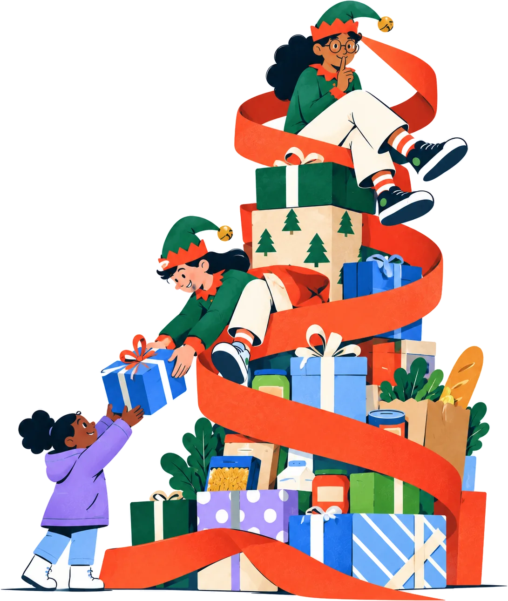
L'Espace Convivial de Waterloo est né en 2014, à l'initiative de Wivine Mayaya. À l'époque, il n'existait aucune épicerie sociale à Waterloo.
Très vite, nous avons compris que manger ne suffisait pas. Derrière un panier, il y a souvent un loyer, un courrier ou un souci de santé. L'épicerie est devenue une porte d'entrée vers un accompagnement plus large, reconnu aujourd'hui comme Initiative Locale d'Insertion par la Région wallonne.
Ici, certains bénéficiaires deviennent bénévoles. Aujourd'hui, chacun peut avoir besoin d'aide ; demain, chacun peut être celui qui aide.
Lire notre histoire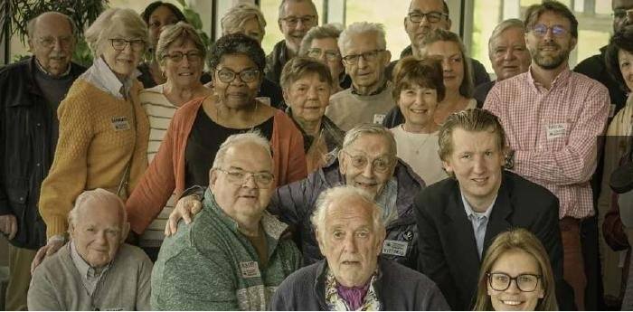
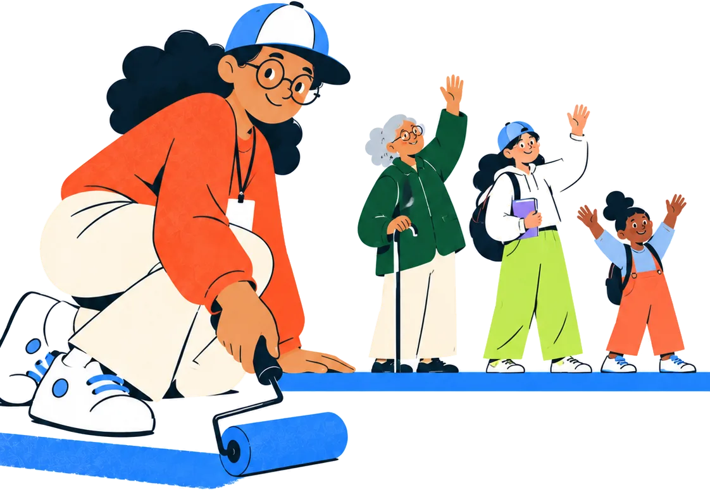
Organisés par les bénévoles, avec peu de moyens et beaucoup d'envie.

Toute l'année, les bénévoles l'entretiennent à la main, et les légumes récoltés partent directement à l'épicerie.
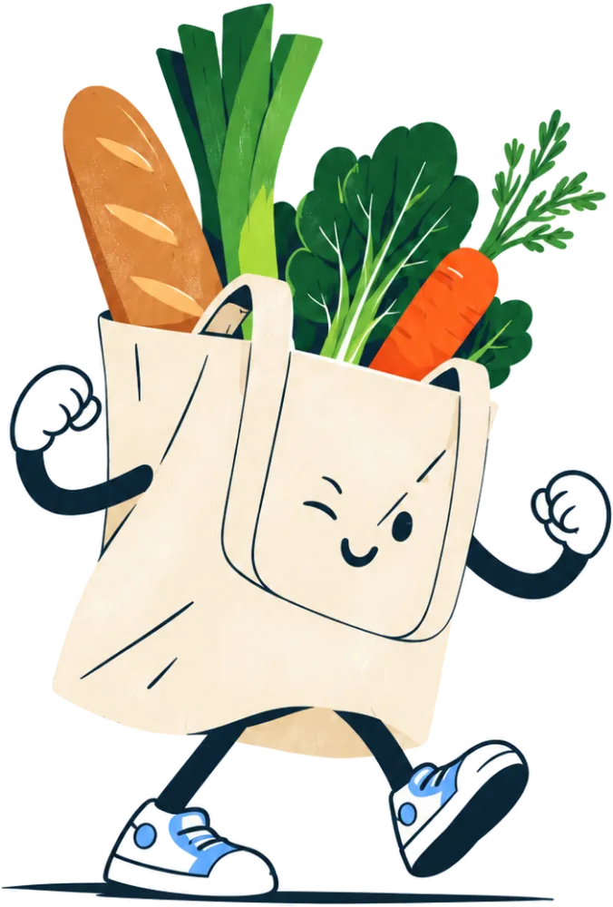
En décembre, un vrai repas de fête pour les familles de l'épicerie, et des cadeaux offerts par les lutin·es. Devenir lutin·e →
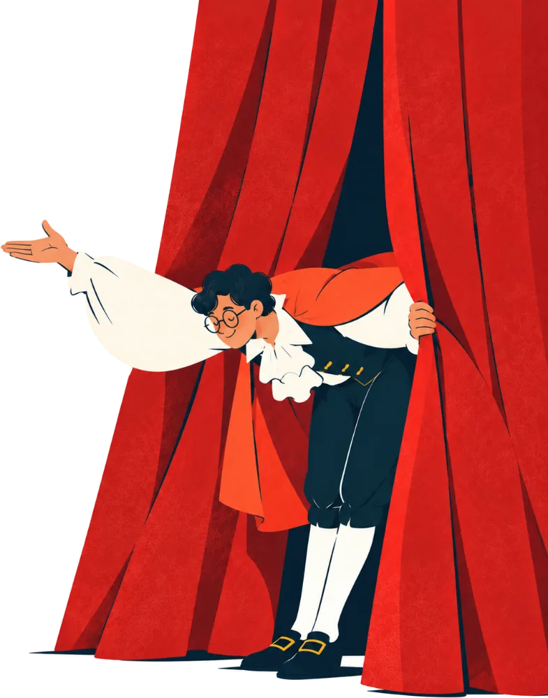
Une fois par an, l'association monte une pièce de théâtre, jouée deux soirs à la salle Jules Bastin. La salle était pleine les deux fois.
Des portraits de bénévoles et d'habitués, des chroniques, des idées de cuisine et des photos de la vie de l'épicerie. Il est imprimé sur papier, et vous pouvez aussi le lire ici.